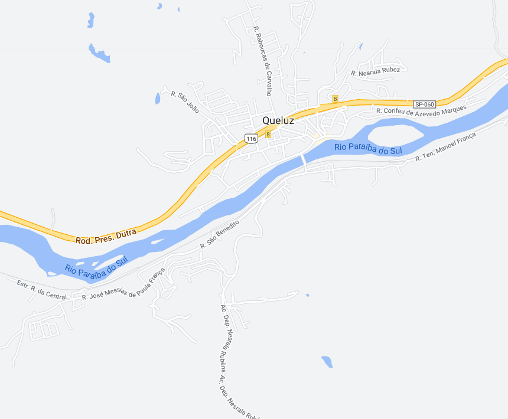

Queluz - Geodex

Município de Queluz
-
Populacão: 13.788 pessoa
-
Área: 249,399km²
-
Fundação: 13 de Junho de 1897
-
Distância da Capital: 232km
Queluz é uma cidade localizada no estado de São Paulo, Brasil. Sua história remonta ao século XVIII, quando foi fundada como um pequeno povoado no caminho entre o Vale do Paraíba e o sul de Minas Gerais. Inicialmente, a região era habitada por indígenas, e posteriormente foi ocupada por bandeirantes e tropeiros. No século XIX, com a expansão da cultura cafeeira na região, Queluz se desenvolveu como um importante centro de produção e comércio de café. A cidade preserva um rico patrimônio histórico, com casarões antigos e igrejas centenárias, refletindo a sua relevância durante o período áureo do café. Atualmente, Queluz é conhecida por sua tranquilidade e pela preservação de sua história e cultura.